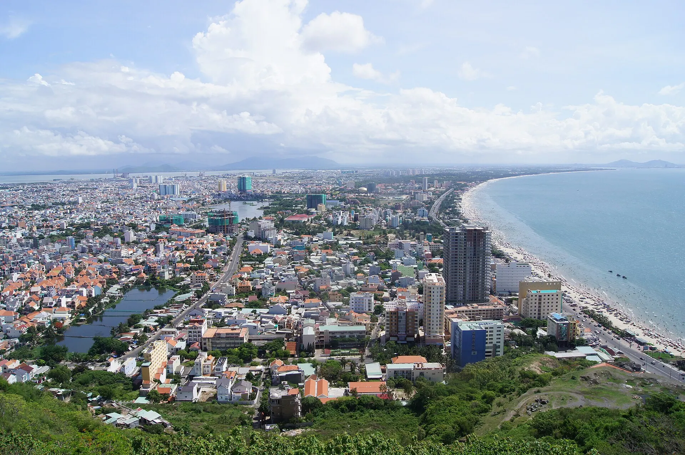

Bánh khọt
Bánh khọt giòn rụm với tôm tươi, cuốn rau cải, chấm nước mắm chua ngọt.

Thành phố biển gần Sài Gòn nhất
Chỉ cách TP.HCM khoảng 2 giờ, Vũng Tàu là điểm nghỉ cuối tuần quen thuộc với Bãi Sau, Bãi Trước, tượng Chúa Kitô Vua trên núi Nhỏ và ngọn hải đăng cổ. Thành phố nổi tiếng với bánh khọt giòn rụm và hải sản tươi ngon.
Đang tải thời tiết...
Bấm vào một tháng để xem có nên đi không
Học sinh nghỉ hè, các bãi biển đông nhất năm.
Đi giữa tuần và đặt phòng sớm để có giá tốt.
Lễ theo âm lịch đổi ngày dương mỗi năm – kiểm tra lịch chính thức trước khi đi.
Bánh khọt giòn rụm với tôm tươi, cuốn rau cải, chấm nước mắm chua ngọt.
Nồi lẩu chua cay với cá đuối sụn giòn, măng chua.
Ảnh minh họa: Nồi lẩu nóng Có ảnh thật của món này? Gửi cho Việt TravelMón bánh nổi tiếng làm quà khi về từ Vũng Tàu.
Ảnh minh họa: Bánh nướng trứng muối Có ảnh thật của món này? Gửi cho Việt TravelBánh khọt tôm giòn cuốn rau
14 Nguyễn Trường Tộ, Vũng Tàu Cập nhật 09/2026 Báo saiLẩu cá đuối chua cay
Đường Hoàng Hoa Thám, Vũng Tàu Cập nhật 09/2026 Báo saiHải sản view biển Bãi Dâu
3 Trần Phú, Vũng Tàu Cập nhật 09/2026 Báo saiQuà mang về đặc trưng
Đường Thùy Vân, Vũng Tàu Cập nhật 09/2026 Báo saiBánh canh ghẹ buổi sáng
Đường Nguyễn Văn Trỗi, Vũng Tàu Cập nhật 09/2026 Báo saiỐc hương, sò điệp nướng
Bãi Dâu, Vũng Tàu Cập nhật 09/2026 Báo saiBánh bèo, bánh bột lọc
Trung tâm Vũng Tàu Cập nhật 09/2026 Báo saiMua hải sản rồi nhờ chế biến
Xóm Lưới, Vũng Tàu Cập nhật 09/2026 Báo saiGiá tham khảo mỗi người. Bấm địa chỉ để mở Google Maps xem giờ mở cửa và đánh giá mới nhất.
Hơn 800 bậc lên đỉnh núi Nhỏ ngắm toàn thành phố.
Bãi biển dài, sóng êm, nhiều dịch vụ.
Lội bộ khi thủy triều rút ra miếu Hòn Bà.
Khu du lịch trên núi Lớn với nhiều trò chơi.
Tự gợi ý theo điểm đến và tháng đi (chọn ngày khởi hành ở phần Lịch trình để đổi tháng). Đánh dấu để ghi nhớ món đã chuẩn bị.
Thấy giá vé, giờ mở cửa hay quán đã thay đổi? Báo sai
500k–1,8tr / đêm
Biển tắm đẹp nhất, nhiều quán hải sản.
400k–1,2tr / đêm
Gần tượng Chúa Kitô, ngọn hải đăng.
1,5tr–5tr / đêm
Resort biển yên tĩnh cách 30–60 phút.
Từ Sài Gòn: xe khách/limousine ~2 giờ, hoặc tàu cao tốc từ bến Bạch Đằng ~2 giờ.
| Từ Hà Nội |
|
|---|---|
| Từ Đà Nẵng |
|
| Từ TP. Hồ Chí Minh |
|
Thời gian ước tính lúc di chuyển, giá một chiều / người mức tiết kiệm – tham khảo. Phương án in đậm là gợi ý.
Giá phòng tham khảo cho 2 người/đêm, cao hơn vào lễ Tết và cuối tuần. Việt Travel không nhận hoa hồng từ các trang đặt chỗ.
Việt Travel · TP. Hồ Chí Minh (Bà Rịa – Vũng Tàu cũ) · Thời điểm đẹp: Tháng 11 – 4
Khởi hành từ TP.HCM, leo tượng Chúa Kitô Vua trên núi Nhỏ.
Tắm biển Bãi Sau, đi bộ ra Hòn Bà khi triều rút.
Dạo phố đêm một chút rồi về nơi ở nghỉ ngơi
Ăn sáng quán bình dân đông người địa phương gần nơi ở
Ngắm bình minh ở ngọn hải đăng Vũng Tàu.
Thăm Bạch Dinh, cáp treo Hồ Mây.
Hải sản chợ Xóm Lưới.
Dạo phố đêm một chút rồi về nơi ở nghỉ ngơi
Mang theo bánh mì, xôi nếu khởi hành sớm
Dinh Cô Long Hải, biển Long Hải.
Tắm biển Hồ Tràm, suối khoáng nóng Bình Châu.
Ăn tối tự chọn: thử lại món bạn thích nhất
Nghỉ resort Hồ Tràm.
Dạo phố đêm một chút rồi về nơi ở nghỉ ngơi
Kết thúc tour: trả phòng, mua đặc sản và di chuyển về.
Ăn sáng tại nơi ở (thường đã gồm trong giá phòng)
Khu bảo tồn Bình Châu – Phước Bửu, trekking rừng.
Ăn trưa ngay tại khu tham quan buổi sáng – nhiều quán gần bến, cổng
Luộc trứng suối nóng, ngâm bùn khoáng.
Dạo chợ đêm hoặc phố ẩm thực để chọn món ăn tối
Dạo phố đêm một chút rồi về nơi ở nghỉ ngơi
Kết thúc tour: trả phòng, mua đặc sản và di chuyển về.
Ăn sáng quán bình dân đông người địa phương gần nơi ở
Đi phà sang Cần Giờ, rừng Sác, đảo Khỉ.
Cơm trưa bình dân gần điểm tham quan
Ăn hải sản Cần Giờ, tắm biển 30/4.
Ăn tối gần nơi ở – chọn quán đông khách địa phương
Về lại TP.HCM.
Kết thúc tour: trả phòng, mua đặc sản và di chuyển về.
Chi tiết mức tiết kiệm
Chi tiết mức thoải mái
Chi tiết mức tiết kiệm
Chi tiết mức thoải mái
Chi tiết mức tiết kiệm
Chi tiết mức thoải mái
Chưa gồm vé máy bay/tàu xe tới Vũng Tàu. Giá tham khảo, thay đổi theo mùa.
Bảng giá vé & giờ mở cửa các điểm tham quan ở Vũng Tàu
Muốn đi nhiều nơi trong một chuyến? Ghép Vũng Tàu với các điểm đến khác.
Chia sẻ trải nghiệm của bạn
Ảnh từ người đọc
Chưa có ảnh nào – hãy là người đầu tiên chia sẻ khoảnh khắc ở Vũng Tàu!
Gửi ảnh của bạn